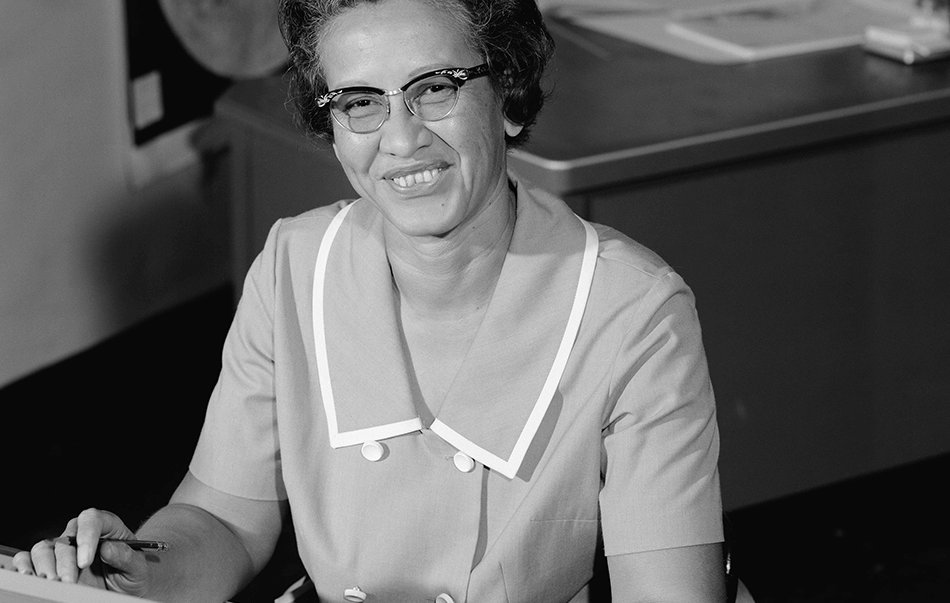

A calculadora que ajudou a Apolo 11 a chegar à Lua
Katherine Coleman Goble Johnson é uma física, cientista espacial e matemática estadunidense. Ela deu contribuições fundamentais para a aeronáutica e exploração espacial dos Estados Unidos, em especial em aplicações da computação na NASA. Conhecido pela precisão na navegação astronômica informatizada, seu trabalho de liderança técnica na NASA se estendeu por décadas.
“Nós sempre vamos ter a ciência conosco. Algumas coisas vão desaparecer, mas sempre vai haver ciência, engenharia e tecnologia. E sempre, sempre vai haver matemática. Tudo é física e matemática”
Sua história
Katherine optou pela matemática com interesse em pesquisa na área, um caminho com muitas portas fechadas para negras na época. Os primeiros empregos que conseguiu eram para lecionar. De 1953 a 1958, ela trabalhou como "computador", fazendo análises para tópicos como a redução da rajada para as aeronaves. Originalmente designada para a seção da West Area Computers, Katherine foi redesignada para a Divisão de Controle e Orientação da Divisão de Pesquisa de Voo. Porém, Katherine e as outras mulheres negras da divisão de computação eram conhecidas como "computadores de cor" e sujeitadas à segregação, trabalhando, comendo e usando banheiros separados de seus colegas brancos até que essa divisão segregada fosse terminada em 1958. De 1958, até sua aposentadoria em 1986, ela trabalhou como técnica aeroespacial. Katherine ainda trabalhou para a seção de Controles aeroespaciais, onde calculou a trajetória de voo de Alan Shepard, o primeiro norte-americano no espaço, em 1959. Calculou também a janela de lançamento do Projeto Mercury, em 1961. Katherine plotou cartas de navegação, orientando naves pelas estrelas em caso de falha eletrônica e, em 1962, verificou os primeiros cálculos de computador da órbita de John Glenn ao redor da Terra.[21]Glenn pediu por ela pessoalmente para verificar os números de seu computador de bordo e se recusou a voar até que ela fizesse a verificação.
Em seguida, Katherine trabalhou com computadores digitais, tais como os conhecemos hoje. Sua habilidade e reputação por precisão em cálculos deu confiança aos colegas para trabalhar com a nova tecnologia. Ela calculou a trajetória da missão Apollo 11, em 1969.Durante o pouso, Katherine estava em uma reunião nas montanhas Pocono, ao redor da televisão junto de várias outras pessoas, assistindo aos primeiros passos na Lua. Em 1970, ela trabalhou na missão da Apollo 13. Assim que a missão foi abortada, Katherine trabalhou nos procedimentos de backup e nas cartas que auxiliaram o retorno em segurança dos astronautas para a Terra, quatro dias depois. Mais tarde, Katherine ainda trabalharia no programa dos ônibus espaciais, nos satélites de observação terrestres e na futura missão a Marte.